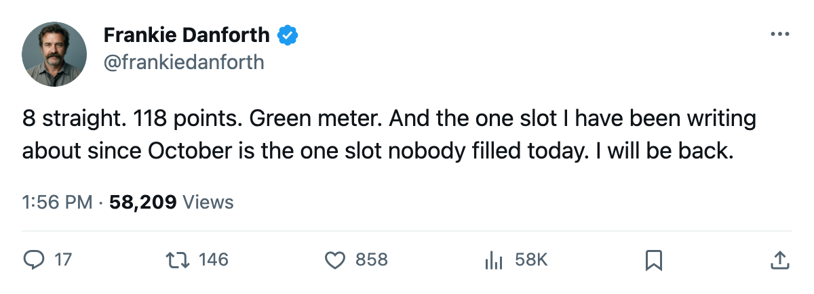
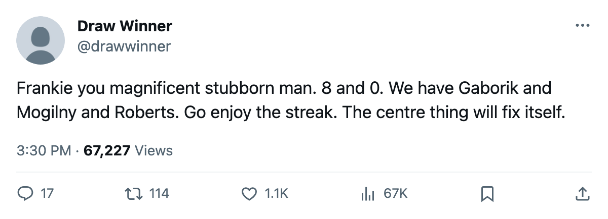

TOR
TORDANFORTH: The clock I have been hearing since October says zero today, and the phone in the front office did not ring
Eight straight wins, 118 points, what the calendar has as the trade deadline, and Mats Sundin still carries the 1C slot alone
 Frankie DanforthColumnist · Queen City Telegram
Frankie DanforthColumnist · Queen City Telegram
Code Green

Ten days ago I wrote that I could hear a clock. The calendar says it ran out today. What the calendar has as the trade deadline is 2005-03-19, and no move has landed for Toronto. The roster sheet reads the same as it did when I started writing about this in October.
The Panic Meter sits at Green. I am telling you this so nobody thinks I am confused about the record. Toronto is 52-12-4, 118 points, 347 goals for, 174 against, and 8 straight wins. The meter is correct. I am not here to argue the meter.
I am here about the centre column.
 Mats Sundin89 is 34 years old, 81 points in 73 games, $8.40M with 5 years left. He is the best player on this club and he is the only true 1C on the roster. The sheet confirms it: Sundin wears the 41C and the P1C and the S2.
Mats Sundin89 is 34 years old, 81 points in 73 games, $8.40M with 5 years left. He is the best player on this club and he is the only true 1C on the roster. The sheet confirms it: Sundin wears the 41C and the P1C and the S2.  Brad Richards85 is 32C and P2RW. Petr Chlup84 is 42C. These are second centres. They are good second centres. Richards is up 4 on the Bureau's Development Index and Chlup is 19 with 50 points. I respect both of them. Neither of them is the answer when Sundin's legs go in Game 6 against New Jersey in May.
Brad Richards85 is 32C and P2RW. Petr Chlup84 is 42C. These are second centres. They are good second centres. Richards is up 4 on the Bureau's Development Index and Chlup is 19 with 50 points. I respect both of them. Neither of them is the answer when Sundin's legs go in Game 6 against New Jersey in May.
Five Leafs sit on the Index risers list.  Marian Gaborik96 at +6,
Marian Gaborik96 at +6,  Barret Jackman84 at +5,
Barret Jackman84 at +5,  Rostislav Klesla82 at +5,
Rostislav Klesla82 at +5,  Rick Nash81 at +5, Richards at +4. That is a pipeline forming. Nash is 20, 35 points in 60 games. Jackman is 24 and playing 30.3 minutes a night. Klesla is 22 and on the power play. None of them are centres. None of them solve the problem I am writing about.
Rick Nash81 at +5, Richards at +4. That is a pipeline forming. Nash is 20, 35 points in 60 games. Jackman is 24 and playing 30.3 minutes a night. Klesla is 22 and on the power play. None of them are centres. None of them solve the problem I am writing about.
 Gary Roberts86 is 38.
Gary Roberts86 is 38.  Alexander Mogilny88 is 36. They are producing, Roberts at 73 points, Mogilny at 76, and I will not pretend that is not remarkable. It is. But the 41C behind Sundin is still the empty slot on the lineup card, and today is the day the window closes on fixing it with another man's jersey.
Alexander Mogilny88 is 36. They are producing, Roberts at 73 points, Mogilny at 76, and I will not pretend that is not remarkable. It is. But the 41C behind Sundin is still the empty slot on the lineup card, and today is the day the window closes on fixing it with another man's jersey.
The streak will end. It will end against a team that has been building toward this since November, a team that will find the one seam in this roster and press it for 7 games. When that night comes, I want a centre behind Sundin who can hold the puck in the zone, win a draw, and take a shift off the Captain's legs in the third period.
Today is not that day. The phone did not ring. The slot is still empty. The meter is Green. I will be right back next week with the same complaint, because the streak will still be going, and the streak makes everyone in this city forget the question I am asking.
The Panic Meter is Code Green. The record says so. I am telling you the meter is wrong about what this team needs.

